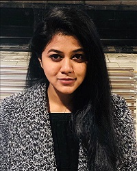

Our Team
Vinkal Patidar
S3760660
Hello, I’m Vinkal Patidar studying Bachelor of IT from RMIT Melbourne.
I’m from Indore which is in India known as mini-Mumbai.
I can speak English, Hindi and Marwari.
I love to go for Adventures activity, camping and to go for long-drive with friends on weekends
and holidays.
Also, I'm intrestend in all kind of indoor as weel as outdoor sports which helped me to be good
leader and team player.
I have travelled North, South and West part of India and am looking forward to completing the
East part in the upcoming year.
Click here for more details.

Danial Tariq
S3848713
My name is Danial Tariq and I am a second-year student at the Royal Melbourne Institute of Technology studying Bachelor of Information Technology.
I was born and raised in Pakistan and moved to Australia in 2016.
I have completed grade 11 in Pakistan and then continued my studies in Australia.
I graduated year 12 in 2018. Some of my hobbies include listening to music and playing gaming.
In terms of languages I speak English, Urdu, Hindi and Punjabi.
Click here for more details.
Khavya Mahesh
S3687324
I’m Khavya Mahesh, I’m an International student from India, studying at RMIT University, currently pursuing Bachelor of Business Information System.
I’ve been in Melbourne for about 3 years now, and have found this place to be completely diverse from the place where I come from as in India,
I used to lead a life with an unique culture that is followed which is very traditional where people follow different religions, speak different languages and so on.
My hobbies are photography, playing basketball, listening to music etc.
At first I thought I’ll do some business only related course and it just struck me back then how I always wanted to know how all these application in any mobile device work or how exactly a computer operates
and I thought to myself if I’m going to become an Entrepreneur, I should not only train myself to be good in the business side but also the technology point of view,
and other major things that gave me an idea of opting for a business course combined with IT touch in it and that’s exactly how my interest in IT field expanded. Our chosen Team name is Tech_squads.
Click here for more details.

Tianqi Shen
S3820826
My name is Tianqi Shen and you could also call me Chovy.
I am now 19years old and new to Information Technology in RMIT.
I was born in China and this is my first time to go abroad to study high-tech knowledge.
Additionally, I am crazy about games, music and kinda sports.
Click here for more details.
Junjie Zeng
S3715989
I am an international student at RMIT, currently studying in year 3 for Bachelor of Business Information System.
I am from China and I have been studying in Australia for 5 years.
I can speak 3 different languages: Mandarin, Cantonese and English.
I am now living with my parents and my elder brother in forest hill VIC.
I am interested in playing instruments and have been studying ukelele on my own recently.
And I am a cat person.
Click here for more details.
Alex Chan
S3781407
My name is Alex Chan and I am from Bairnsdale, a small regional town in eastern Victoria.
I was born in Australia and raised by my mother and father who both emigrated from Hong Kong to Australia.
While English is my first language, I can speak Cantonese at a conversational level with my relatives, but I do not have the ability to read or write in it.
During Years 11 and 12 I completed Computing and Software Development subjects as a part of my VCE, while they were not strictly prerequisites to my university degree,
having a sound understanding of the basics in computing was important. I have been studying at RMIT since 2019,
currently it is my second year studying a Bachelor of Computer and Network Engineering.
I have taken Introduction to Information Technology as an elective subject. Ever since I was a child,
I have enjoyed playing single-player video games, such as open-world RPGs and indie games.
I also have a large interest in computer hardware, especially surrounding gaming PCs.
Anything from reading about the latest hardware news to building and customising my own desktop computer.
I also own a dog, an 8-year-old Papillon named Radar who always loves to eat and sleep.
Click here for more details.
Group Processes
For the Assignment 2, the work delegation, the interaction and communication of the team is doing great, everyone have the consistent understanding of the project idea. Most of the team member are satisfied with the presented report and web pages. As we have received and listened to the feedback for our outcome, we have decided to adding more specific detail of the ideas, and replenish partial information in the Assignment 3. Within the process of this assignment, we went through internal discussion with the group to further improve of the artifact of our fitness application project idea. We went through the details of the current project including work flows of essential attributes and element in the major functionalities of our product. To better present our ideas to the audience, our team have investigate on the health/diet/sport mobile application product which are currently in the market. We make analysis and comparison of them to our project thought meeting consultation, and then decide the overall design of the product. With the rest of the time, our team spending most of it on designing and establishing the product GUI (Graphic User Interface) from paper design draft to the final of a series of presentation image of UI made with tools.
Career Plans
Ideal Jobs:
| Danial Tariq | Cyber Security Analyst |
| Khavya Mahesh | Business Analyst |
| Vinkal Patidar | Full Stack Developer |
| Tianqi Shen | Web Developer |
| Junjie Zeng | Data Administrator |
| Alex Chan | System Engineer |
With receiving the first and second assignment feedback, each individual member of the group have not much alteration of the career plan, most of us are remaining the same goals for the career. Within all the ideal jobs of the team, some are more belonging into specific IT professional jobs, e.g. Cyber Security Analyst, Full Stack Developer and System Engineer, and there are others which required the general understanding of IT but also interactive to the other field of industry (design, business management and etc.)
The similarity of the technical skills and general ability requirement:
problem solving skills, communication skills, organizational skills, HTML 5, JavaScript and also giving attention to even the smallest detail.The other similarity is that all the ideal jobs among the teams are corresponding to the field of ICT and all of these jobs will need to apply the use of technology to reach the goals.
The differences between our Ideal jobs includes unique skills that are required for each of us to possess and also the way we attain them such as the non-highlighted part of the table above. Every job is different in its own way as their goal is unique and the purpose of performing those skills may vary depending on the requirements of the job positions.